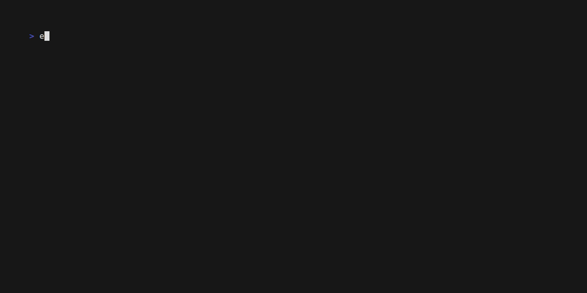

Denoro
A command-line interface tool that allows you to explore, manage, and manipulate local Deno KV database files.

Features
KV Database Explorer
Browse and search through your local Deno KV database files with ease
Interactive CLI
User-friendly command-line interface for database operations
Data Management
Create, read, update, and delete KV entries directly from the terminal
TypeScript Support
Built with TypeScript for type safety and better developer experience
Installation
curl -fsSL https://raw.githubusercontent.com/davrodpin/denoro/main/install.sh | sh